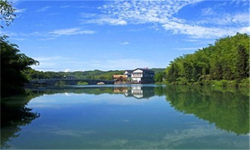
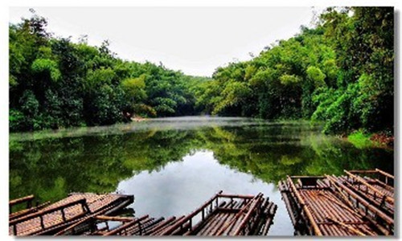
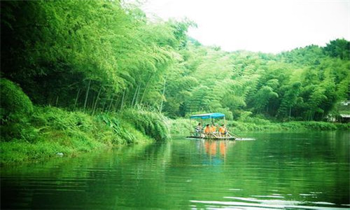
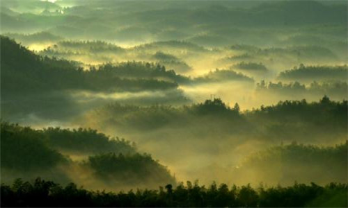
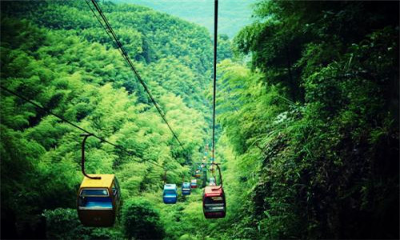
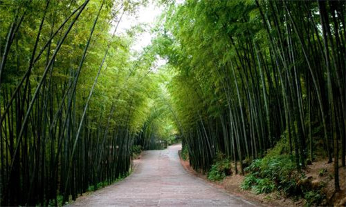

morly旅游网
蜀南竹海原名万岭箐，位于四川南部宜宾市境内，方圆120平方公里，中心景区44平方公里，共8大景区两大序景区134处景点，生长着楠竹、水竹、人面竹、琴丝竹等乡土竹子58种，引种了巨龙竹、黄金间碧玉竹等竹子300多种，共有竹子427种、7万余亩，植被覆盖率达87％，为我国空气负离子含量极高的天然大氧吧。
蜀南竹海集竹景、山水、溶洞、湖泊、瀑布于一体，兼有历史悠久的人文景观，主要景观有墨溪、忘忧谷、翡翠长廊、仙寓硐、天宝寨、七彩飞瀑、青龙湖、仙女湖、海中海、迎风湾、竹海博物馆、游人中心、鱼化石、育江、夕佳山古民居等。蜀南竹海的绝妙之处是500多个山头上成片生长着7万余亩翠竹，千峰万岭峰峰是竹，岭岭皆绿，恰似线丘上隆凸起的一个竹类大盆景，盆景表层似一片绿色的海洋，四周丹崖绝壁，风景异常奇绝。
 观云亭
又名轿子石。亭中可观川南浅丘。河水如带，阡陌纵横，处处竹树人家。再远处，是四川盆地向云贵高原过渡的盆周山区。东西延伸的两列山脉逶迤起伏，其中一列是黄色的山岭，另一列长满了绿色植被，它们犹若“黄龙”和“青龙”，并排游弋，护卫着蜀南竹海这块风水宝地。
青龙湖景区
面积3．06平方公里，以大型水面和历史遗迹为主。青龙湖，位于高耸险峻的插旗山下，水面3平方公里，是葱茏竹海之中的最大湖泊。湖上可荡舟划筏，湖边亭阁，也可品茗小酌。夏秋之夜，山峦沉郁而秀朗，清风徐来，涟漪翩翩，湖边纳凉闲话，别有情趣。
蜀南竹海博物馆
集竹文物收藏保护、展览、学术研究和社会教育于一体，以“追溯千古民族文化，展示万载竹类精华”为宗旨。馆内设六大展示厅、一个“竹园”和一个竹工艺作坊，分别陈列展示了旖旎的竹海风光、丰富的竹类资源、灿烂的竹文化的照片。
 海中海
位于翡翠长廊至仙寓洞景区公路的左侧，是仙寓洞景区的第一个景点。海中海原是竹海山上一个比较低的槽谷，后筑坝形成一个湖泊，于一九九八年三月对外开放。湖泊面积约60亩，湖面空旷开阔，俨然茫茫竹海中的一个“海子”，故名海中海。
七彩飞瀑
又名落魂台。《江安县志》载：万岭箐南北飞瀑，殆似庐山”。不择地而出的泉水，使得深邃幽深的竹海充满灵气；山岩跌宕处，每每作了悬泉飞瀑。山间数十条姿态各异的瀑布中，最为壮观的，当数七彩飞瀑。
仙女湖
竹海的著名景点之一，位于仙寓洞的山顶上，与天宝寨、仙寓洞形成仙寓洞景区旅游环线。 仙女湖湖水清澈碧绿。晨曦初升，夕阳西下，万道霞光中，仙女湖犹如一个金色的湖盆，壮丽辉煌。晨雾烟雨中，绿的山.翠的竹，又构成了一幅幅美丽的水彩画卷。
翡翠长廊
位于竹海深处的翡翠长廊，是蜀南竹海的又一胜景。翡翠长廊路面是由“色如渥丹、灿若明霞”的天然红砂石铺成。两旁密集的老竹新篁拱列，遮天蔽日。红色地毯式的公路与绿色屏风般的楠竹交相辉映，形成秀丽壮美的翡翠长廊。
 内容整理至网络，如有侵权，请联系我们！1255394075@qq.com